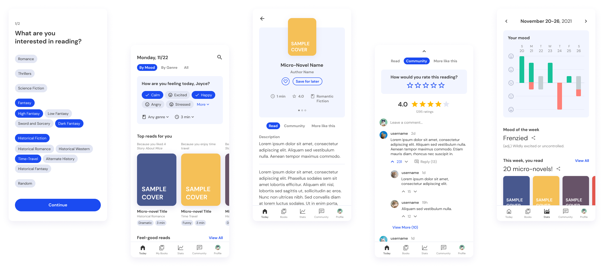
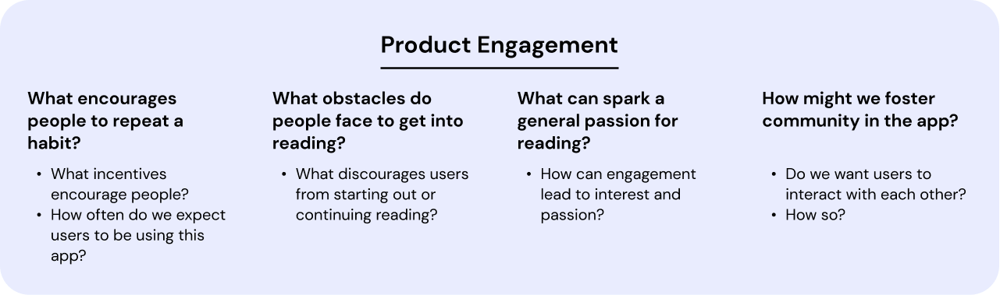

Duration
November 21-26, 2021
Type
Mobile app
Tools
Figma, Google Forms
"The Department of Literature is building an app to encourage people to read more for fun. This app will randomly push micro-novels according to users’ chosen mood, types of interests and estimated reading time."
I received this prompt as part of a design challenge from an internship application. For 6 days, I took to the people around me to hear their thoughts on reading, their moods, and their interests, and worked them together to design a mobile app I call MoodFood.
I designed five mocks with a variety of features to get users excited about micro-novels. While the time constraint was demanding, this project taught me how to prioritize, conduct rapid research and iterations, and make quick decisions.
Prior to beginning any research, I took some time to ask questions about recommendation apps and user needs. What problems is the app seeking to address? What do users want to gain from using the app? How do we encourage users to use this app?
Mobile apps rely on consistent usage. I knew that engaging and retaining users, especially if I was trying to help them establish reading habits, would benefit both the app and the users. As a result, creating valuable product engagement was a key focus for this project.
The design challenge prompt never defined my target audience, so I chose to target one group to reduce the scope of my project (and save time!). I chose older teens and young adults for the following reasons:
Because of my time limitations, the most effective way for me to answer my questions was through a survey. I sent one out to college students regarding reading habits, how they consume content under different moods, and experiences with related apps. These were my conclusions after 21 responses:
Most people read (articles, stories) for short periods of time, multiple times in a day, on their phones in the comfort of their homes. This validates that there is a niche for quick reads on mobile devices.
Firstly, reading feels like a commitment; people cite being busy, having a low attention span, getting distracted, and struggling to pick out a book as blockers. A respondent constrasts this with how quick and noncommittal it feels to open up YouTube and pick out a video to watch.
Secondly, people regularly engage in online and in-person discussions for the content they enjoy. Enabling discussion and a sense of community would be a way to increase product engagement.
When people are in a positive mood, they prefer uplifting, funny, and hobby-related content. When people are in a negative mood, they prefer both sad content or funny, warm, and thought-provoking content. And this takes us to our next section…
How do we create and present tailored recommendations for users? To understand this a little better, I looked at book recommendation apps like GoodReads and Likewise.
These apps use discovery features that push the most suitable books for users based on what they had read previously and what genres they expressed interest in during the app onboarding.
Based on my prompt and competitor research, I identified four factors that would determine a recommendation.
With my research in mind, I created a user flow that incorporates onboarding, a home page for recommendations, and pages to increase product engagement. I highlighted five distinct pages that I would focus on for this project.
For many of our competitors, a short onboarding process is an effective way to a create personalized experience. MoodFood asks for preferred genres/subgenres on one page (and prior reading history on the following).
Visually, I kept this page simple to reduce the cognitive burden of onboarding. Originally, I wanted to display the genres as a grid, but putting them in a list made it easier to display sub-genres.

The “today page,” or the home page, houses the main functionality of the app: a user can enter their moods, preferred genre-of-the-day, and preferred reading time, and the app generates recommendations.
The first half of the page shows “top reads” for the user’s mood, interests, and reading history, and the second half shows a list of micro-novels categorized by ways to handle their mood.
There were a few visual iterations I played around with, one being a full screen popup for entering mood and a separate page for displaying recommendations. However, this felt invasive, so I opted for a small, expandable card on the same page as the recommendations.

This is the page where the user actually reads the micro-novel. The top of the page displays general information about the micro-novel, and below that, users can read a short description before jumping into the actual text.
Besides just the micro-novel, this page includes a community discussion tab and an additional recommendations tab to keep users engaged longer.
In these three pages, my biggest goal was to decrease the pressure of finding and finishing a micro-novel. MoodFood accomplishes this in a few ways.
Before starting on my hi-fis, I brainstormed a simple style guide for font and color styles. I wanted to keep the interface simple, and chose a sans-serif font with one accent color.

As I discovered through the survey, I couldn’t rely on users themselves to stay committed to their daily reads, and needed to design features to keep them engaged and motivated. A high product engagement not only helps users develop good habits, but helps the product by increasing its retention rate.
From my interviews, I found that 70% of interviewees engaged in in-person discussion, 60% engaged in online discussion, and 60% viewed fan-created content for their favorite content. People love to give their opinions on content, from books to movies, YouTube videos, and news articles. These spaces foster areas for discussion, because discussion in and of itself is content.
Being able to discuss content creates a sense of community. It helps people enjoy their content more and gives more of a reason to come back to the app.

In MoodFood, each micro-novel has its own community page with a rating and commenting section.

I also wanted to see how we could get users to come back to the app repeatedly until they developed a habit. For inspiration, I turned to a mood-tracking app I used in the past: Daylio, which not only visualizes users’ moods but encourages users to make tracking them a habit.
Unlike many of the other pages, the mood tracker and statistics page is not a critical feature. However, this page, inspired by Daylio, increases product engagement by providing users with a variety of evaluative features based on their moods and reading progress every week.
This page rewards habit and helps users be more mindful of their moods. It’s also another channel to push more micro-novel recommendations to users.
MoodFood was a great opportunity to see what I could research, explore, and refine in one week. Because the prompt was vague, I had a lot of freedom on how I wanted to approach the project. I learned to quickly extrapolate decisions from user research and developed unique features beyond the prompt.
A few areas of improvement:
Let's get in touch!